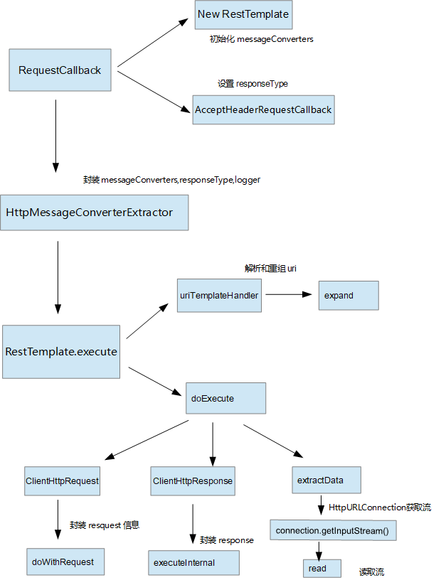

@RestController
@RequestMapping("/youku1327")
public class ProviderController {
@GetMapping("user")
public String getUser(){
return "youku1327";
}
@GetMapping("user/{name}")
public String getUserName(@PathVariable String name){
return name;
}
/**
* @Author lsc
* @Description <p> </p>
* @Date 2019/10/14 11:40
* @Version 1.0
*/
@Configuration
public class RestTemplateConfig {
// 配置 RestTemplate
@Bean
public RestTemplate restTemplate(ClientHttpRequestFactory factory){
return new RestTemplate(factory);
}
@Bean
public ClientHttpRequestFactory simpleClientHttpRequestFactory(){
// 创建一个 httpCilent 简单工厂
SimpleClientHttpRequestFactory factory = new SimpleClientHttpRequestFactory();
// 设置连接超时
factory.setConnectTimeout(15000);
// 设置读取超时
factory.setReadTimeout(5000);
return factory;
}
} @Autowired
RestTemplate restTemplate;
/*
* @Author lsc
* @Description <p> URL带参 </p>
* @Date 2019/10/18 13:49
* @Param []
* @return void
**/
@Test
public void testGETParams(){
// http://localhost:8090/youku1327/user/{1}
String result = restTemplate.getForObject("http://localhost:8090/youku1327/user/{name}", String.class,"lsc");
System.out.println(result);
}

参数列表：
@Nullable
public <T> T getForObject(String url, Class<T> responseType, Object... uriVariables) throws RestClientException {
// request回调函数
RequestCallback requestCallback = this.acceptHeaderRequestCallback(responseType);
// HttpMessageConverterExtractor是对消息转换器里面的信息进行提取
HttpMessageConverterExtractor<T> responseExtractor = new HttpMessageConverterExtractor(responseType, this.getMessageConverters(), this.logger);
// 执行restful过程调用
return this.execute(url, HttpMethod.GET, requestCallback, responseExtractor, (Object[])uriVariables);
}点击进入acceptHeaderRequestCallback方法，在次期间，其创建了一个RestTemplate对象，并且调用了
AcceptHeaderRequestCallback类里面AcceptHeaderRequestCallback方法。
public <T> RequestCallback acceptHeaderRequestCallback(Class<T> responseType) {
return new RestTemplate.AcceptHeaderRequestCallback(responseType);
}在创建RestTemplate过程中主要是封装了7种messageConverters ，errorHandler ，logger，uriTemplateHandler，headersExtractor，requestFactory，Interceptors.最重要的还是messageConverters ，本次示例采用的String类型的返回值，那么对应的就是StringHttpMessageConverter.
public RestTemplate() {
this.messageConverters = new ArrayList();
this.errorHandler = new DefaultResponseErrorHandler();
this.headersExtractor = new RestTemplate.HeadersExtractor();
this.messageConverters.add(new ByteArrayHttpMessageConverter());
this.messageConverters.add(new StringHttpMessageConverter());
this.messageConverters.add(new ResourceHttpMessageConverter(false));
try {
this.messageConverters.add(new SourceHttpMessageConverter());
} catch (Error var2) {
;
}
this.messageConverters.add(new AllEncompassingFormHttpMessageConverter());
if (romePresent) {
this.messageConverters.add(new AtomFeedHttpMessageConverter());
this.messageConverters.add(new RssChannelHttpMessageConverter());
}
if (jackson2XmlPresent) {
this.messageConverters.add(new MappingJackson2XmlHttpMessageConverter());
} else if (jaxb2Present) {
this.messageConverters.add(new Jaxb2RootElementHttpMessageConverter());
}
if (jackson2Present) {
this.messageConverters.add(new MappingJackson2HttpMessageConverter());
} else if (gsonPresent) {
this.messageConverters.add(new GsonHttpMessageConverter());
} else if (jsonbPresent) {
this.messageConverters.add(new JsonbHttpMessageConverter());
}
if (jackson2SmilePresent) {
this.messageConverters.add(new MappingJackson2SmileHttpMessageConverter());
}
if (jackson2CborPresent) {
this.messageConverters.add(new MappingJackson2CborHttpMessageConverter());
}
this.uriTemplateHandler = initUriTemplateHandler();
}AcceptHeaderRequestCallback实现了RequestCallback，其中AcceptHeaderRequestCallback构造方法里面主要是对返回值类型（这里是java.lang.String类型）赋值，里面还有一个方法（实现函数式接口void doWithRequest(ClientHttpRequest var1) throws IOException;）主要是是做一些request相关的事情，比如封装responseType和messageConverters ，判定response是否可读，支持的媒体类型等。
public AcceptHeaderRequestCallback(@Nullable Type responseType) {
this.responseType = responseType;
}HttpMessageConverterExtractor是一个HttpMessageConverter的信息提取器，里面对于返回值类型，消息转换器进行断言非空判定，封装日志信息等。
构造器：
HttpMessageConverterExtractor(Type responseType, List<HttpMessageConverter<?>> messageConverters, Log logger) {
Assert.notNull(responseType, "'responseType' must not be null");
Assert.notEmpty(messageConverters, "'messageConverters' must not be empty");
this.responseType = responseType;
this.responseClass = responseType instanceof Class ? (Class)responseType : null;
this.messageConverters = messageConverters;
this.logger = logger;
}excute方法主要做了url的规则判定和解析重组，request，response封装，请求资源信息，输入流转为我们指定返回值类型的数据。
@Nullable
public <T> T execute(String url, HttpMethod method, @Nullable RequestCallback requestCallback, @Nullable ResponseExtractor<T> responseExtractor, Object... uriVariables) throws RestClientException {
// 会对uri进行解析重组 http://localhost:8090/youku1327/user/lsc
URI expanded = this.getUriTemplateHandler().expand(url, uriVariables);
//
return this.doExecute(expanded, method, requestCallback, responseExtractor);
}
// 获得uriTemplateHandler
public UriTemplateHandler getUriTemplateHandler() {
return this.uriTemplateHandler;
}
// UriTemplateHandler接口
public interface UriTemplateHandler {
URI expand(String var1, Map<String, ?> var2);
URI expand(String var1, Object... var2);
}
// uri扩展信息
public URI expand(String uriTemplate, Object... uriVars) {
// uriTemplate = http://localhost:8090/youku1327/user/{name}
return this.uriString(uriTemplate).build(uriVars);
}
到了expand方法要分两步看，第一个是默认的uri构造器（DefaultUriBuilderFactory），这个过程会对进行解析，把scheme(http)，host(localhost),port（8090）等信息从uil中解析出来，把路径的信息封装进pathBuilder（这边是path存放的是/youku1327/user/{name}）.
// DefaultUriBuilderFactory
public UriBuilder uriString(String uriTemplate) {
return new DefaultUriBuilderFactory.DefaultUriBuilder(uriTemplate);
}
// 这里走的是默认的uri构建器（DefaultUriBuilder）
public DefaultUriBuilder(String uriTemplate) {
this.uriComponentsBuilder = this.initUriComponentsBuilder(uriTemplate);
}
// initUriComponentsBuilder 初始化 UriComponentsBuilder 解析uri
private UriComponentsBuilder initUriComponentsBuilder(String uriTemplate) {
UriComponentsBuilder result;
if (StringUtils.isEmpty(uriTemplate)) {
result = DefaultUriBuilderFactory.this.baseUri != null ? DefaultUriBuilderFactory.this.baseUri.cloneBuilder() : UriComponentsBuilder.newInstance();
} else if (DefaultUriBuilderFactory.this.baseUri != null) {
UriComponentsBuilder builder = UriComponentsBuilder.fromUriString(uriTemplate);
UriComponents uri = builder.build();
result = uri.getHost() == null ? DefaultUriBuilderFactory.this.baseUri.cloneBuilder().uriComponents(uri) : builder;
} else {
//
result = UriComponentsBuilder.fromUriString(uriTemplate);
}
if (DefaultUriBuilderFactory.this.encodingMode.equals(DefaultUriBuilderFactory.EncodingMode.TEMPLATE_AND_VALUES)) {
result.encode();
}
this.parsePathIfNecessary(result);
return result;
}
// UriComponentsBuilder构造器 里面封装了uri解析的信息
protected UriComponentsBuilder(UriComponentsBuilder other) {
this.charset = StandardCharsets.UTF_8;
this.scheme = other.scheme;
this.ssp = other.ssp;
this.userInfo = other.userInfo;
this.host = other.host;
this.port = other.port;
this.pathBuilder = other.pathBuilder.cloneBuilder();
this.queryParams.putAll(other.queryParams);
this.fragment = other.fragment;
this.encodeTemplate = other.encodeTemplate;
this.charset = other.charset;
}
uriString初始化完毕，第二步回到之前的expand方法里面执行build方法,这边会初始化uriComponentsBuilder
public URI build(Object... uriVars) {
if (ObjectUtils.isEmpty(uriVars) && !DefaultUriBuilderFactory.this.defaultUriVariables.isEmpty()) {
return this.build(Collections.emptyMap());
} else {
if (DefaultUriBuilderFactory.this.encodingMode.equals(DefaultUriBuilderFactory.EncodingMode.VALUES_ONLY)) {
// uriVars
uriVars = UriUtils.encodeUriVariables(uriVars);
}
// http://localhost:8090/youku1327/user/lsc
UriComponents uric = this.uriComponentsBuilder.build().expand(uriVars);
// 返回URI对象 http://localhost:8090/youku1327/user/lsc
return this.createUri(uric);
}
}
public UriComponents build() {
return this.build(false);
}
public UriComponents build(boolean encoded) {
Object result;
if (this.ssp != null) {
result = new OpaqueUriComponents(this.scheme, this.ssp, this.fragment);
} else {
// 具有层次结构的uri也就是解析后的uri
HierarchicalUriComponents uric = new HierarchicalUriComponents(this.scheme, this.fragment, this.userInfo, this.host, this.port, this.pathBuilder.build(), this.queryParams, encoded);
// http://localhost:8090/youku1327/user/{name}
result = this.encodeTemplate ? uric.encodeTemplate(this.charset) : uric;
}
if (!this.uriVariables.isEmpty()) {
result = ((UriComponents)result).expand((name) -> {
return this.uriVariables.getOrDefault(name, UriTemplateVariables.SKIP_VALUE);
});
}
return (UriComponents)result;
}
uriComponentsBuilder初始化完毕会执行expand
public final UriComponents expand(Object... uriVariableValues) {
Assert.notNull(uriVariableValues, "'uriVariableValues' must not be null");
return this.expandInternal(new UriComponents.VarArgsTemplateVariables(uriVariableValues));
}
@Nullable
protected <T> T doExecute(URI url, @Nullable HttpMethod method, @Nullable RequestCallback requestCallback, @Nullable ResponseExtractor<T> responseExtractor) throws RestClientException {
Assert.notNull(url, "URI is required");
Assert.notNull(method, "HttpMethod is required");
ClientHttpResponse response = null;
Object var14;
try {
// 创建request
ClientHttpRequest request = this.createRequest(url, method);
if (requestCallback != null) {
// request信息封装
requestCallback.doWithRequest(request);
}
// 执行execute获得response
response = request.execute();
// response信息校验
this.handleResponse(url, method, response);
// response信息提取
var14 = responseExtractor != null ? responseExtractor.extractData(response) : null;
} catch (IOException var12) {
String resource = url.toString();
String query = url.getRawQuery();
resource = query != null ? resource.substring(0, resource.indexOf(63)) : resource;
throw new ResourceAccessException("I/O error on " + method.name() + " request for \"" + resource + "\": " + var12.getMessage(), var12);
} finally {
if (response != null) {
response.close();
}
}
// 返回值
return var14;
}
public ClientHttpRequest createRequest(URI uri, HttpMethod httpMethod) throws IOException {
// 创建 HttpURLConnection sun.net.www.protocol.http.HttpURLConnection:http://localhost:8090/youku1327/user/lsc
HttpURLConnection connection = this.openConnection(uri.toURL(), this.proxy);
// 准备连接操作
this.prepareConnection(connection, httpMethod.name());
// 创建 ClientHttpRequest
return (ClientHttpRequest)(this.bufferRequestBody ? new SimpleBufferingClientHttpRequest(connection, this.outputStreaming) : new SimpleStreamingClientHttpRequest(connection, this.chunkSize, this.outputStreaming));
}
// HttpAccessor 中 createRequest
protected ClientHttpRequest createRequest(URI url, HttpMethod method) throws IOException {
ClientHttpRequest request = this.getRequestFactory().createRequest(url, method);
if (this.logger.isDebugEnabled()) {
this.logger.debug("HTTP " + method.name() + " " + url);
}
return request;
}
prepareConnection准备连接操作，设置连接的超时，读取超时信息，设置是否是输入，设置请求方式（示例是GET）。
protected void prepareConnection(HttpURLConnection connection, String httpMethod) throws IOException {
if (this.connectTimeout >= 0) {
connection.setConnectTimeout(this.connectTimeout);
}
if (this.readTimeout >= 0) {
connection.setReadTimeout(this.readTimeout);
}
connection.setDoInput(true);
if ("GET".equals(httpMethod)) {
connection.setInstanceFollowRedirects(true);
} else {
connection.setInstanceFollowRedirects(false);
}
if (!"POST".equals(httpMethod) && !"PUT".equals(httpMethod) && !"PATCH".equals(httpMethod) && !"DELETE".equals(httpMethod)) {
connection.setDoOutput(false);
} else {
connection.setDoOutput(true);
}
connection.setRequestMethod(httpMethod);
}
SimpleBufferingClientHttpRequest继承了AbstractClientHttpRequest，在此期间会跳至LinkedMultiValueMap，HttpHeaders。
//
SimpleBufferingClientHttpRequest(HttpURLConnection connection, boolean outputStreaming) {
// 连接信息
this.connection = connection;
// 判定是请求输出 outputStreaming=true
this.outputStreaming = outputStreaming;
}
这期间是封装request的body，head，connection，如果你使用的是postForEntity测试会更加明显
public void doWithRequest(ClientHttpRequest request) throws IOException {
if (this.responseType != null) {
List<MediaType> allSupportedMediaTypes = (List)RestTemplate.this.getMessageConverters().stream().filter((converter) -> {
return this.canReadResponse(this.responseType, converter);
}).flatMap(this::getSupportedMediaTypes).distinct().sorted(MediaType.SPECIFICITY_COMPARATOR).collect(Collectors.toList());
if (RestTemplate.this.logger.isDebugEnabled()) {
RestTemplate.this.logger.debug("Accept=" + allSupportedMediaTypes);
}
request.getHeaders().setAccept(allSupportedMediaTypes);
}
}
就是执行request的executeInternal方法，获得response
public final ClientHttpResponse execute() throws IOException {
this.assertNotExecuted();
ClientHttpResponse result = this.executeInternal(this.headers);
this.executed = true;
// 返回 ClientHttpResponse
return result;
}
// AbstractBufferingClientHttpRequest类 拿到 ClientHttpResponse
protected ClientHttpResponse executeInternal(HttpHeaders headers) throws IOException {
byte[] bytes = this.bufferedOutput.toByteArray();
if (headers.getContentLength() < 0L) {
headers.setContentLength((long)bytes.length);
}
ClientHttpResponse result = this.executeInternal(headers, bytes);
this.bufferedOutput = new ByteArrayOutputStream(0);
return result;
}
提取response信息
public T extractData(ClientHttpResponse response) throws IOException {
MessageBodyClientHttpResponseWrapper responseWrapper = new MessageBodyClientHttpResponseWrapper(response);
// 这里很重要就是从这里获得输入流
if (responseWrapper.hasMessageBody() && !responseWrapper.hasEmptyMessageBody()) {
MediaType contentType = this.getContentType(responseWrapper);
try {
Iterator var4 = this.messageConverters.iterator();
while(var4.hasNext()) {
HttpMessageConverter<?> messageConverter = (HttpMessageConverter)var4.next();
if (messageConverter instanceof GenericHttpMessageConverter) {
GenericHttpMessageConverter<?> genericMessageConverter = (GenericHttpMessageConverter)messageConverter;
if (genericMessageConverter.canRead(this.responseType, (Class)null, contentType)) {
if (this.logger.isDebugEnabled()) {
ResolvableType resolvableType = ResolvableType.forType(this.responseType);
this.logger.debug("Reading to [" + resolvableType + "]");
}
return genericMessageConverter.read(this.responseType, (Class)null, responseWrapper);
}
}
if (this.responseClass != null && messageConverter.canRead(this.responseClass, contentType)) {
if (this.logger.isDebugEnabled()) {
String className = this.responseClass.getName();
this.logger.debug("Reading to [" + className + "] as \"" + contentType + "\"");
}
// 将responseWrapper里面的信息读取
return messageConverter.read(this.responseClass, responseWrapper);
}
}
} catch (HttpMessageNotReadableException | IOException var8) {
throw new RestClientException("Error while extracting response for type [" + this.responseType + "] and content type [" + contentType + "]", var8);
}
throw new RestClientException("Could not extract response: no suitable HttpMessageConverter found for response type [" + this.responseType + "] and content type [" + contentType + "]");
} else {
return null;
}
}
// 1 判定中会调用getBody方法
public boolean hasEmptyMessageBody() throws IOException {
// 调用
InputStream body = this.response.getBody();
if (body.markSupported()) {
body.mark(1);
if (body.read() == -1) {
return true;
} else {
body.reset();
return false;
}
} else {
this.pushbackInputStream = new PushbackInputStream(body);
int b = this.pushbackInputStream.read();
if (b == -1) {
return true;
} else {
this.pushbackInputStream.unread(b);
return false;
}
}
}
// 2 获得输入流
public InputStream getBody() throws IOException {
return (InputStream)(this.pushbackInputStream != null ? this.pushbackInputStream : this.response.getBody());
}
// 3 SimpleClientHttpResponse 类 getBody 方法
public InputStream getBody() throws IOException {
InputStream errorStream = this.connection.getErrorStream();
// 调用了connection的getInputStream方法
this.responseStream = errorStream != null ? errorStream : this.connection.getInputStream();
return this.responseStream;
}
后面就比较简单将获得输入流转为字符串
// 1 read方法
public final T read(Class<? extends T> clazz, HttpInputMessage inputMessage) throws IOException, HttpMessageNotReadableException {
return this.readInternal(clazz, inputMessage);
}
// 2 调用readInternal方法
protected String readInternal(Class<? extends String> clazz, HttpInputMessage inputMessage) throws IOException {
// 设置字符集
Charset charset = this.getContentTypeCharset(inputMessage.getHeaders().getContentType());
// 将输入流转为字符串
return StreamUtils.copyToString(inputMessage.getBody(), charset);
}
// 3 将输入流转为字符串
public static String copyToString(@Nullable InputStream in, Charset charset) throws IOException {
if (in == null) {
return "";
} else {
StringBuilder out = new StringBuilder();
InputStreamReader reader = new InputStreamReader(in, charset);
char[] buffer = new char[4096];
boolean var5 = true;
int bytesRead;
while((bytesRead = reader.read(buffer)) != -1) {
out.append(buffer, 0, bytesRead);
}
// lsc
return out.toString();
}
}
restTemplate的getForObject方法的本质其实就是HttpURLConnection进行资源的调用，在此期间它会帮我们进行uri的校验，参数封装，头信息放置，其次会创建request，response，然后封装请求头，响应头信息，最终将获得的输入流通过工具类转换为我们参数指定的返回类型的值。
既然restTemplate底层是HttpURLConnection实现我们试验一下这种方式调用，发现确实调用成功，代码清单如下，如果自己要手动写一个restTemplate,那么你只要写好request,response用于封装请求和响应信息，,uri解析重组合法验证，然后HttpURLConnection获取流，经过工具类解析流就成功了。
@Test
public void testURLConnection() throws IOException {
getMethod("http://localhost:8090/youku1327/user",null);
}
public void getMethod(String url, String query) throws IOException {
URL restURL = new URL(url);
// 获得一个URLConnection
HttpURLConnection conn = (HttpURLConnection) restURL.openConnection();
// 设置为 GET请求
conn.setRequestMethod("GET");
// 设置请求属性
conn.setRequestProperty("Content-Type", "text/plain");
// 表示输出
conn.setDoOutput(true);
BufferedReader br = new BufferedReader(new InputStreamReader(conn.getInputStream()));
String line;
while ((line = br.readLine()) != null) {
System.out.println(line);
}
br.close();
}